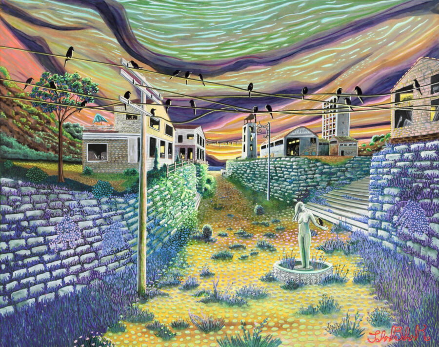

Spaces for People, Systems for Spaces
Western Exhibitions is thrilled to present Spaces for People, Systems for Spaces, a group show about the built environment — cities, buildings, structures, urban planning — featuring 15 artists from across the States who make art about architecture.
The show opens on January 9, 2026, with a public reception from 5 to 8pm and runs through March 21. Gallery hours are Tuesday to Saturday, 11am to 6pm.
Kim Beck (lives and works in Pittsburgh), a multidisciplinary artist whose work explores the everydayness of disaster, is showing a work from her Woven Roads series — photographs of pavement, potholes and road repairs physically woven together. The piece contains images that have been cut into slices and reconstituted in a new, almost illegible weaving, creating a visual plane that has a visual buzz. The ground becomes a flickering surface dissolving before our eyes.
John Behnke’s (b. 1991, lives and works in Chicago) paintings tell complex stories that combine romantic attitudes toward the natural world with dystopian visions of the near future. Painted from memory, based on tangible places, his cityscapes travel between the surreal and hyperreal. He describes his eerie, fluorescent palette as “paranormal colors” and presents most as being at the time of dusk. Behnke works at his home studio in Oriole Park and at Project Onward, both in Chicago.
Marshall Brown (b. 1973, lives and works in Princeton, NJ) is an architect, urbanist, and futurist whose work creates new connections, associations, and meanings among disconnected architectural and urban remnants. We’ll be showing a piece from his Forgeries series, a growing body of work that responds directly to contemporary art’s portrayals of architecture. In these pieces, Brown dismantles photographs by several contemporary artists and reassembles them to create collages that borrow pictorial strategies from the early modern architect and prolific collagist, Ludwig Mies van der Rohe. The Forgeries play a double game. Brown retools Mies’ pictorial flatland as a mirror to reflect contemporary art’s gaze back on itself and constructs new spaces that subvert our attempts to separate the two creative worlds of architecture and art.
Courttney Cooper (b. 1977, lives and works in Cincinnati, OH) draws large elaborate and exuberant maps from his physical and psychological experiences in Cincinnati. Gluing together pieces of found paper from his job at a grocery store, Cooper’s obsessive drawings, rendered with ballpoint pens, map out neighborhoods in his hometown in remarkable detail. Buildings, streets, and conversations are all recorded from memory. Cooper’s work illustrates a sublime moment in time, attempting to understand something as complex as a city. Cooper lives and works in Cincinnati and is an artist member at Visionaries + Voices.
Shir Ende (lives and works in Chicago) is interested in what it would look like if our bodies could become material to build architecture. Ende wants to reposition the choreographer as an architect, enabling them to shape environments by directing movements that define space. Her drawings use a notational system to devise proposals of impossible scores for performances and nonsensical floor plans simultaneously. They imagine a world not limited by gravity and time. Merging flatness and dimensionality, destabilizing the horizon line, alternating perspectives further disorientates the viewer. Ende’s drawings do what a performance cannot: create a record of an articulated space.
Plotted out beforehand using graphite pencil, rulers and protractors, and hand-painted with the illusion of hard-edged precision, Edie Fake’s (b. 1980, Evanston, IL) artistic practice mines the grammar of architecture to carve out space for bodies that have been othered and invalidated by dominant systems of knowledge. Fake’s abstract representations of community form and collapse, cohere and dissipate, reflective of the real experience within queer lives and their ever-shifting constellations, while centering his central concern for the audacity of queer utopian imagining